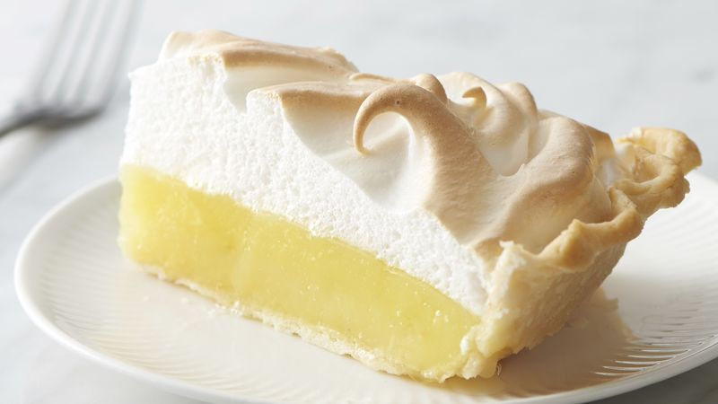

Description
A pleasant combination of creamy and tart, irresistible to those of us with a sweet tooth.
This recipe can serve up to eight people. Enjoy!
Ingredients
Lemon Filling
- One cup of white sugar
- Two tablespoong of white flour
- Three tablespoong of cornstarch
- A quarter of a teaspoon of salt
- One and a half cups of water
- Two medium-sized lemons, juiced and zested
- Two tablespoons of butter
- Four egg yolks, beaten
- One (9 inch, or 23 centimeter) prepared pie crust, baked
Meringue
- Four egg whites
- Half a cup of white sugar
Steps
- Gather all the ingredients and preheat the oven to 325 degrees F (165 degrees C).
- To make the lemon filling: Whisk one cup sugar, flour, cornstarch, and salt together in a medium-sized saucepan;
stir in water, lemon juice, and lemon zest. Cook over medium-high heat, stirring frequently, until the
mixture comes to a boil. Stir in butter.
- Place the egg yolks in a small bowl and gradually whisk in half a cup of hot sugar mixture.
- Whisk egg yolk mixture back into remaining sugar mixture. Bring to a boil and continue to cook while stirring
constantly until thick. Remove from heat; pour filling into baked pastry crust.
- To make the meringue topping: Beat egg whites in a glass, metal, or ceramic bowl with an electric mixer until
foamy. Gradually add sugar, continuing to beat until stiff peaks form.
- Working quickly, spread meringue over pie filling, sealing the edges at the crust. Use the back of the spoon
to create peaks on the top of the meringue if you like.
- Bake pie in the preheated oven until the meringue is golden brown, about twenty to twenty-five minutes.
Adapted from Allrecipes